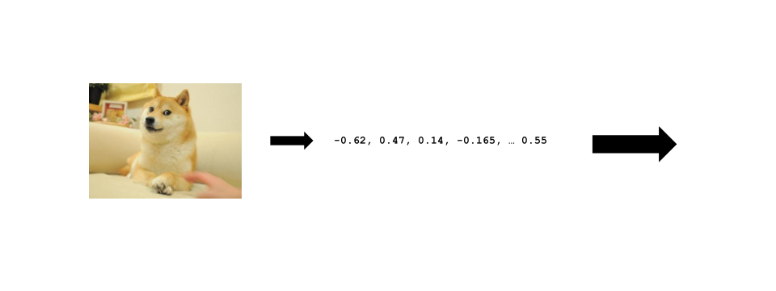
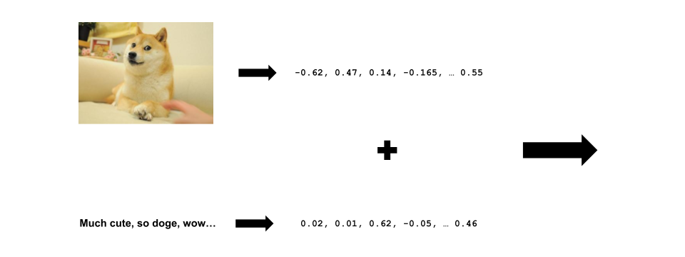
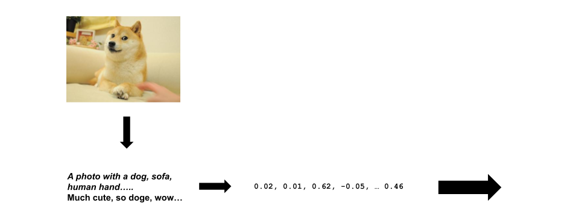

Edinburgh Centre for Data, Culture & Society
Image and Text Analysis using
Multi-modal Embeddings
Justin Chun-ting Ho
Amsterdam School of Communication Research
(in collaboration with Marthe Möller, Joanna Strycharz, and Rhianne Hoek)

Why do we care?
A Walk Through the History of
Automated Content Analysis
Bag-of-words Approahes
- 2004: Opinion Lexicon (Hu and Liu, KDD-2004)
- 2008: Wordfish (Slapin and Proksch)
- 2012: Probabilistic Topic Models (David M. Blei)
(Grimmer and Stewart, 2013)
Word Embeddings Approaches
2013: Word2vec
2017: Transformers
2018: BERT
Image Analysis
---- Kroon et al. (2023)
Pixels
Credit: Julie Waterhouse Photography; Ultimate-Photo-Tips.com
2009: ImageNet
2013: Clarifai
2016: Google Cloud Vision
The Problem
A Solution

(Radford et al, 2021)
BERTopic
(Grootendorst, 2022)
Here comes the Questions
1. Is it useful?
2. When is it (not) useful?
Three approaches
- Multimodal
- Image only
- Text-based
Image only Approach
Multimodal Approach
Text-based Approach
Data
- Instagram posts of 44 Dutch green influencer
- 283 posts, 794 images (with caption)
- Coded manually for the themes
Themes

Is it useful?
Coverage
Correct Classification Rate

When is it (not) useful?
Correct Classification Rate by Topic

What's next?
- Expand it to other countries?
- Measure contextual similarity?
- Tag along the ChatGPT hype?